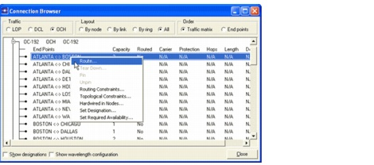
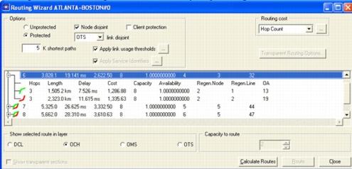
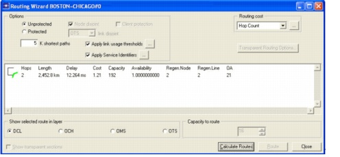

Network Design Operations > Routing Manually
Routing Manually
The previous routing actions attempt to route all connections that are part of a selected traffic matrix. An algorithm automatically calculates routes, driven by the chosen routing criteria. Automated routing of an entire traffic matrix does not allow you to specify how individual connections are to be routed. To address this need, the Routing Wizard allows you to select individual connections and route them manually.
Procedure 3-4 Routing OCH and DCL Connections Manually
- Open the WDMGuru_Examples project.
- Select File > Open....
- Select the WDMGuru_Examples project, then press Open.
The example project, which contains multiple scenarios, is loaded. The Australia scenario appears in the workspace.
- Select Scenarios > Switch To Scenario > USA to view the USA scenario in the workspace.
- Routing manually in the OCH layer.
- Select Network > Connection Browser.
- Select the OCH layer and expand the OC-192 traffic matrix (using the + icon).
- Right click on the ATLANTA <-> BOSTON connection and select Route.

The Routing Wizard ATLANTA = BOSTON dialog box appears.
- Select Protected to route the connection using the 1+1 protection scheme. Put a checkmark next to Node Disjoint (do not put a checkmark next to Client Protection) and select OTS Link Disjoint.
- Click Calculate Routes.
This dialog box now shows a list of possible routes with the main characteristics of each route (length, cost, capacity, availability, etc.). You can sort the connections according to these criteria by setting the appropriate criterion in the Routing Cost field. By clicking on a proposed route in the list, the path that would be assigned is displayed in the workspace.
- Use the + icon to inspect the characteristics of the working and protection paths. Select the first route. In the Capacity to Route field you can select the capacity to route along this path. Select 2 (Capacity to Route), then click Route.
The connection is now accommodated in the network. The connection browser shows that the connection ATLANTA <-> BOSTON is now routed in the network.

- Right-click on the connection ATLANTA <-> CHICAGO in the connection browser and select Route... to route this connection manually.
The Routing Wizard dialog box for this connection appears.
Note that it is no longer possible to route this connection unprotected, because all connections of a given traffic matrix must use the same protection scheme.
- Accept the default settings and click Calculate Routes.
A list of candidate routes appears in the treeview.
- Select the route with the shortest fiber length and click Route.
The connection ATLANTA <-> CHICAGO is now also accommodated in the network.
- Close the Routing Wizard dialog box and the connection browser.
- Select the DCL layer view by clicking on the DCL button in the toolbar.
As a result of routing two connections in the OCH layer, two logical links are created in the DCL layer.
- Now you will perform manual routing in the DCL layer.
- Select Network > Connection Browser.
- Select the DCL layer and expand the STS-1 traffic matrix (using the + icon).
- Right-click on the BOSTON <-> CHICAGO connection and select Route.
The Routing Wizard dialog box for this connection appears.
- Accept the default settings and click Calculate Routes.
A list of potential routes appears, but now it shows routes through the DCL-layer infrastructure. There is only one possible route, because there are only two links in the DCL layer.

- Select the only available route, choose 16 for the Capacity to Route, and then press Route to accommodate the connection in the network.
The connection appears routed in the connection browser.
You can also visualize the route of the DCL connection in the OCH layer by clicking on the OCH button in the toolbar. Both the working and protection parts are shown. Even though there was no path diversity available at the DCL layer, there is underlying diversity in the OCH layer, as a result of routing the OCH connections with protection.
- Close the project
End of Procedure 3-4
| Home © 1987-2007 OPNET Technologies, Inc. All Rights Reserved. This software may be covered by one or more U.S. Patents. See complete patent notice in the Legal Notices section. OPNET Support Center |